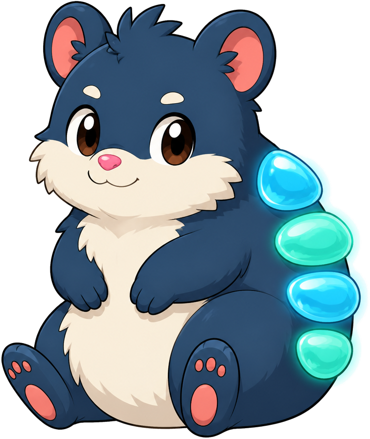
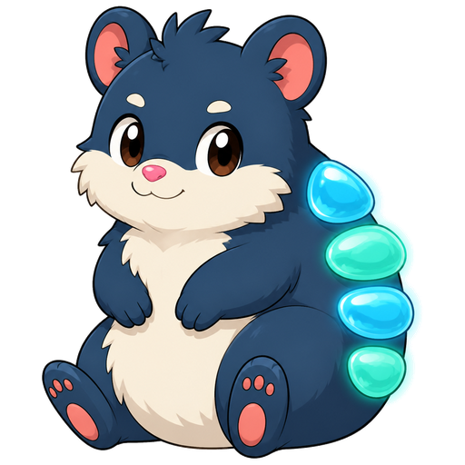

感知Sensing
最上方的鳞片最先转向光标、声音和新落下的东西，像一只安静的雷达。The top scale turns first toward cursors, sounds, and newly arrived things—a quiet little radar.
置物岛生物观察记录 · 001SILL FIELD NOTE · 001
一只住在置物岛底缘的液态护鳞小兽。你忙着把东西放下、拿走、再继续向前；他留在原地，替你看守那些还没想好该放去哪里的片刻。 A little liquid-scaled creature who lives along the lower rim of Sill. While you drop things, pick them up, and move on, he stays behind to watch over the moments that do not have a home yet.

看起来软乎乎，抱起来却比想象中沉。
那是因为他的身体里存着一小片潮汐。
Softer than he looks, heavier than you expect.
There is a small tide held inside him.
01 / ORIGIN
潮水退去后，偶尔会有一滴水不肯回到海里。它躲进温暖的石缝，慢慢长出重量、心跳和一条粗粗的尾巴。很久以后，那滴水睁开眼睛——第一只潮核兽就这样诞生了。
核核的身体并不是普通的皮毛。深海军蓝的外层之下，是能缓慢流动、重新聚拢的“水核”。所以他被戳到时会先压扁，再像一滴饱满的水珠一样弹回来；需要赶路时，他会收起短短的爪子，沿着岛底稳稳地滚一小段。
When the tide withdraws, one drop of water will sometimes refuse to return to the sea. It hides in a warm seam of stone and slowly grows weight, a heartbeat, and a broad tail. Much later, the drop opens its eyes—and a tidecore is born.
Beneath Pobb's deep navy coat is a water-core that can flow and gather itself again. That is why a poke makes him squash before springing back like a full drop of water. And when he needs to travel, he tucks in his short paws and rolls a little way along the island floor.

02 / FOUR SCALES
它们不是装饰，也不是翅膀。每只潮核兽一生都只有四枚液态玻璃护鳞，从肩到尾依次变小。They are not decoration, and they are not wings. Every tidecore carries exactly four liquid-glass scales, descending from shoulder to tail.
最上方的鳞片最先转向光标、声音和新落下的东西，像一只安静的雷达。The top scale turns first toward cursors, sounds, and newly arrived things—a quiet little radar.
睡觉时，四枚鳞片会从尾端逐片合上，变成一床刚好遮住脸的青蓝色小被子。At bedtime the four scales fold forward, one by one, into an aqua blanket that just covers his face.
水光会短暂留下身边事物的颜色。核核不翻看内容，只记得“你曾把什么珍重地放在这里”。Their water-light briefly keeps nearby colors. Pobb never reads your things; he only remembers that you placed something here with care.
开心时由尾到肩依次亮起；受惊时同时张开；安心时则像水面一样缓慢呼吸。They glow tail-to-shoulder when happy, flare together when startled, and breathe like still water when he feels safe.
03 / TEMPERAMENT
他不会扑向每件新东西。通常先竖耳、抬眼，再让最上方的鳞片悄悄转过去。He never rushes toward something new. First the ears, then the eyes, then the top scale quietly turns.
不催你整理，也不追问用途。他只是待在旁边，让临时放下的东西不显得孤零零。He never asks you to organize or explain. He simply stays nearby so the things you set down do not feel abandoned.
可以轻轻戳一下。第二下他会忍，第三下就会团成球，滚到你碰不到的地方。One gentle poke is welcome. He tolerates a second. On the third, he becomes a ball and rolls just out of reach.
04 / A DAY ON SILL
四枚鳞片像扇面一样依次打开。他把前爪伸得很远，完成一天里最大的一次动作。His scales open like a fan. He reaches both paws forward for the biggest movement of his day.
沿底边滚一小段，停下，看看岛上有没有新客人。远处只是方向，不是必须抵达的目的地。He rolls a short distance, stops, and checks for new arrivals. Faraway points are directions, never obligations.
放出一圈薄薄的水膜，从耳后流到尾尖。鳞片重新透亮，他也会显得颇为满意。A thin water-film travels from behind his ears to his tail. The scales clear; Pobb looks quietly pleased.
把爪子揣到肚皮下，鳞片逐片盖住背和脸，只留一个鼻尖在外面慢慢呼吸。Paws tucked under his belly, scales cover back and face one by one. Only a nose remains, breathing slowly.
05 / HOW TO READ A POBB
A SMALL AGREEMENT
作为交换，核核会守着岛边，替每个暂时无处安放的文件、片段和念头，留一小块安静的位置。In return, Pobb will keep watch at the island's edge and save a quiet little place for every file, fragment, and thought that has nowhere else to go yet.
回到置物岛，去见核核Return to Sill and meet Pobb